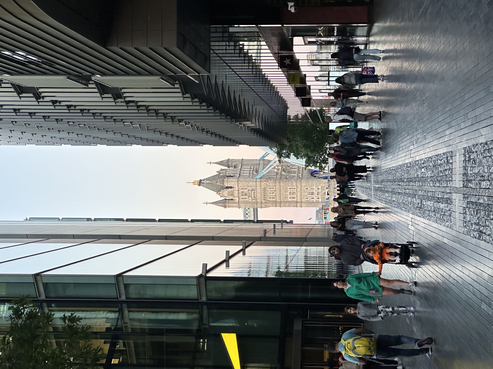

Beyond short-form content
Stories built for a longer format.

Alongside short-form content, I create long-form films built around research, scripting, historical context and visual storytelling.
These personal projects, created during my own trips, give me the space to develop larger scripts, explore long-form storytelling, and carry an idea from research through filming and final edit.